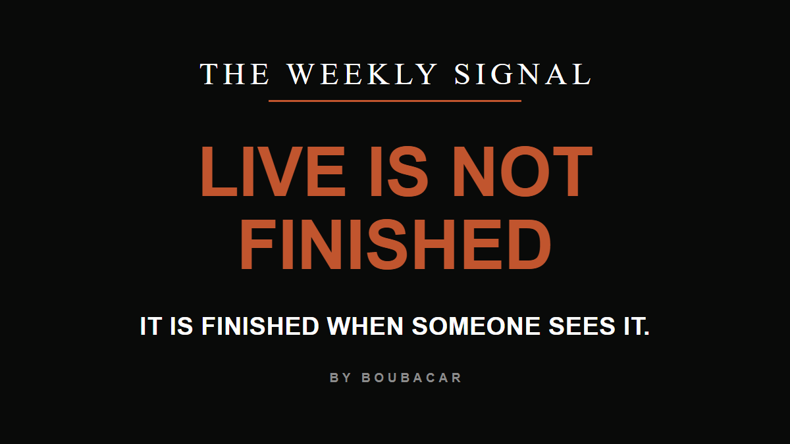

Copy each block below straight into Beehiiv, in order, then send. Nothing here posts or schedules anything on its own.
Five things to move across: the header image, the subject line, the preview text, the body, then the pre-send checklist. Every block has its own copy button.
In Beehiiv, open the new post and upload this file as the post thumbnail / header image. Same 1200 x 675 typographic card as the last several issues.

On a phone, press and hold the image to save it. The same file also sits on your machine next to the local copy of this sheet, in the assets folder, as 2026-08-12-live-is-not-finished.png
Repo home for it: docs\personal\newsletters-august-2026\assets\2026-08-12-live-is-not-finished.png
Copy this into the Subject field.
Use this oneLive is not finished
What did you build that nobody saw
This alternate points at the reader instead of at you, which usually opens better. The recommended one above is the stronger sentence. Your call, pick one.
Copy this into the Preview text field, the grey line that shows next to the subject in the inbox.
I shipped a paid product this week. Almost nobody saw it. Here is the part of the job I keep underrating.
Click into the Beehiiv editor body and paste this whole block. It goes in as plain text and Beehiiv keeps the paragraph breaks, same as every prior issue. Two small touches after pasting: bold the line Three things before you go, and check that the link on the last line is clickable.
I shipped a paid product this week. Idea to live to taking payments, in an afternoon. Almost nobody saw it. I only said the real problem out loud when I got frustrated with my own operation. I do not have a problem creating things and making them go live. I have a problem getting people to see what I have created. I spent years in HR watching process people hunt for the one step that limits everything, fix that step, and leave the rest alone. Then I spent a year building, and I noticed I had been polishing steps that were never the constraint. The real constraint was distribution. Building feels like progress. Asking someone to look feels like asking a favor, so distribution loses the fight for my time almost every time I put the two side by side. Building has a finish line. You know the exact minute the page goes live. Being seen has no finish line, so it loses when you can only do one. Here is the rule I am writing down for myself, in public, so it is harder to skip again: a page is not finished when it is live. It is finished when there is a plan for who sees it, with names or dates attached to that plan. Look at your own last week. What did you build, fix, or launch that nobody outside your head saw? Do not answer that in your head. Go find the actual thing, then hit reply and tell me what it was. The same problem is probably sitting in your business right now. Most small businesses have no file anywhere that tells an AI assistant what they sell, who buys it, and what they charge. The business is real. It is just not written down anywhere the AI can reach. So when someone asks ChatGPT or Claude for a recommendation in that category, the AI is guessing, and it usually guesses wrong or skips the business completely. Same shape as my problem. You built the thing and nobody can see it. I ran the in-person version of this in Sandy on July 30. People came, built the file in the room, and more have been asking since, which is why the next one is online. Next Wednesday, August 19th, 11am to noon Mountain time. You bring a laptop and an hour. You leave with three things: the file itself, written in your own words and running on your own machine, the recipes to keep using it after we hang up, and a cheat sheet built to print. It gets built on your machine, by you, while I am there to unstick you. Nothing you type leaves your laptop, and you can prove that in the middle of the session by pulling your wifi down and carrying straight on. Camera on or off, your call. Not a demo of mine. Your file, done by noon. It is $25, and you have a week to clear one hour: catalystworks.consulting/w/online-nl Three things before you go 1. Forward this to one business owner who is trying to figure out where AI fits in their business. One forward is more useful to me than ten retweets. 2. Was this forwarded to you? Subscribe at signal.catalystworks.consulting. The moment you do, you also get a free scan that shows how visible your business is when people ask AI for a recommendation. 3. Reply with one sentence about what is stuck in your week. I read every one and it shapes what ships next. Boubacar I spent over a decade in HR at a Fortune 100. Now I'm a fractional AI leader who can help small businesses put AI to work. boubacar@catalystworks.consulting · signal.catalystworks.consulting
Header image uploaded, and it is the 1200 x 675 card above. Subject and preview text both filled in. The link on the last body line reads catalystworks.consulting/w/online-nl and nothing has been appended to it. It already carries its tracking on the redirect, so adding anything doubles it. Send to the full list. Beehiiv adds its own unsubscribe footer, so there is no address to add.
{kind=link}